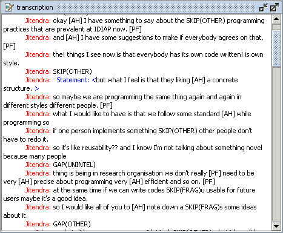

The Transcription Area (Figure 1) displays imported speech transcriptions from the chosen observation, information about speakers, and information annotated at those transcriptions such as dialogue acts and adjacency pairs. The speech transcriptions are time aligned with the signals.

Figure 1: Transcription Area